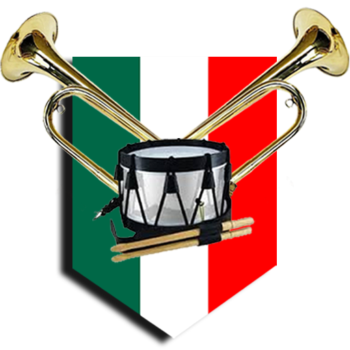
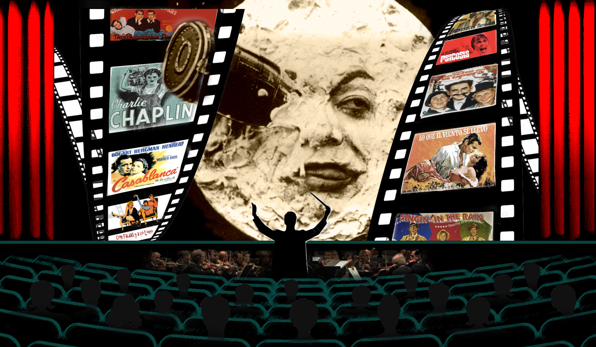
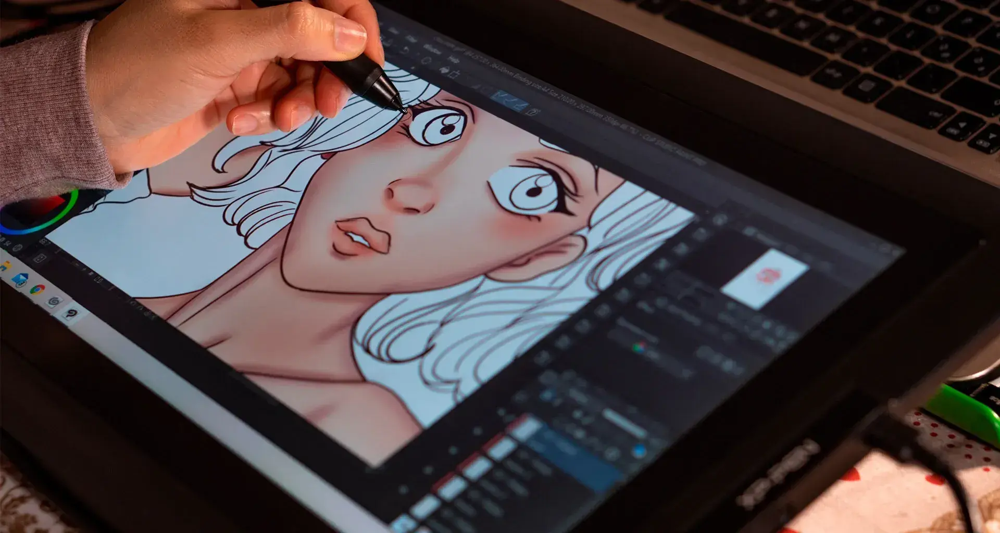

En el Instituto Tecnológico de Pachuca, las actividades complementarias son una oportunidad para crecer en lo académico, deportivo, cultural y personal. Además de ser parte de tu formación integral, estas actividades te ayudarán a juntar los créditos necesarios que te permitan continuar con etapas clave de tu carrera como el servicio social y la residencia profesional.
Algunas de las actividades que podras desarrollar en el instituto, tanto deportivas como culturales, estarán listadas en el siguiente apartado. Para poder inscribirte a este mismo deberás dar clic en el botón con tu actividad de interés

Escolta y Banda de Guerra Baile Moderno
Baile Moderno

Cine Club Danza Folklórica
Danza Folklórica
 Fotografía
Fotografía

Ilustración Digital Música Pintura y Dibujo
Teatro
Pintura y Dibujo
Teatro
Los MOOC son cursos en línea, gratuitos y abiertos a la comunidad del TecNM y al público en general. A través de esta plataforma podrás tomar diversos cursos, incluidos cursos de inglés, así como realizar su evaluación correspondiente. Al finalizar, podrás descargar tu constancia.